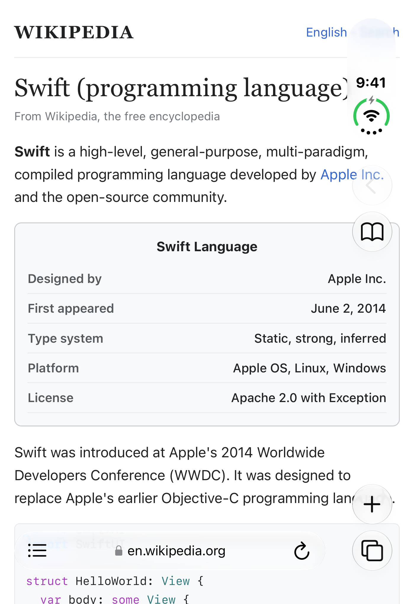
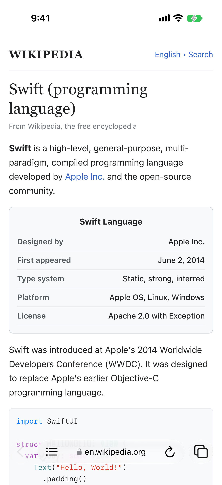
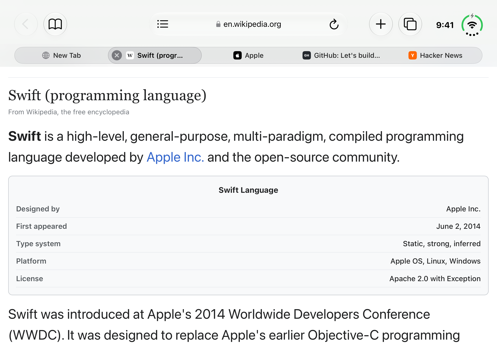
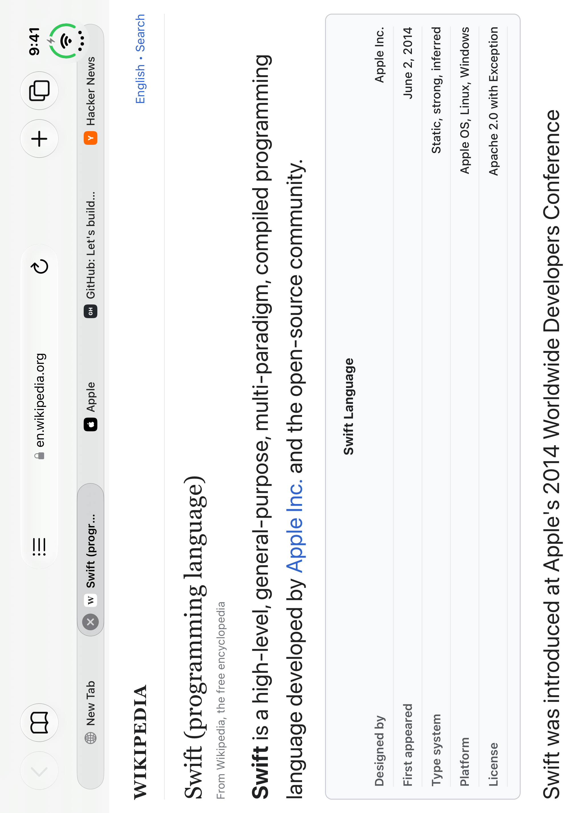

Controls that step aside
Browse edge to edge while reading, with controls that fade away and return when you scroll back.
OuterView
OuterView fills the whole screen with your page, and the controls step aside while you read.
Browse edge to edge while reading, with controls that fade away and return when you scroll back.
A single address bar stays with you on every display, so search and navigation feel familiar.
Open a fresh tab to see favorites, recent visits, and quick actions for getting going.
Clean up long articles for reading, search within a page, and adjust text size per site.
Group tabs by topic and switch to Private browsing when you want no history kept.
Keep bookmarks, history, and reading list in one place, bring in Safari bookmarks, and manage downloads with Files.
Real screens from OuterView.

iPhone Duo closed front display with side buttons and bottom address bar.

Any standard iPhone such as iPhone 17 Pro with bottom address bar flanked by Back and Tabs.

Duo unfolded sideways and iPad sideways with top address bar and tab strip.

Duo unfolded upright and iPad upright with bottom address bar and edge tab list.
Your browsing data stays on your device inside SwiftData with zero tracking. For privacy questions, please ask via GitHub issues.